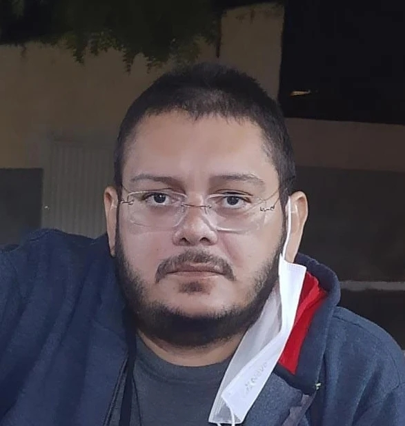

Guia Pedagógico para a formação
de professores da EJA em
Pensamento Computacional
Sobre
O PensaEJA é um Guia com atividades sobre o Pensamento Computacional (PC), baseado no método Paulo Freire, para ser trabalhado por meio de componentes curriculares na formação de professores da Educação de Jovens e Adultos (EJA).
A proposta é um dos produtos da dissertação de mestrado de Soraya Roberta dos Santos Medeiros, sob a orientação da Profa. Dra. Cibelle Amorim Martins.
O material foi elaborado no PPgITE-IMD-UFRN com a colaboração dos docentes da Escola Estadual Antônio de Azevedo que atuam na EJA.
A produção está sob a licença Creative Commons “Atribuição-NãoComercial-CompartilhaIgual” e pode ser acessada na tela inicial por meio do botão “PensaEJA”.
Publicações
Equipe
Organizadoras

Soraya Medeiros

Autores
Antônio

Arian Lopes
Jozelí Azevedo

Laissa Silva

Sued Araújo
Contato
Soraya Medeiros
soraya.roberta.js@gmail.com
Cibelle Martins
cibelle.martins@ufrn.br